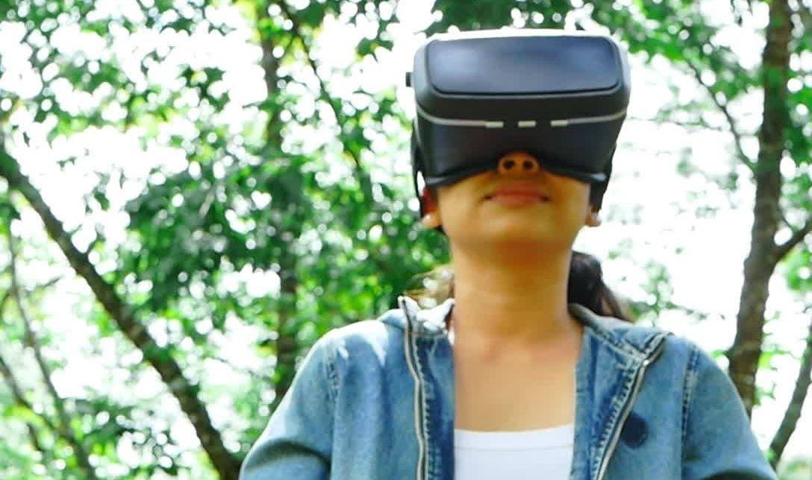
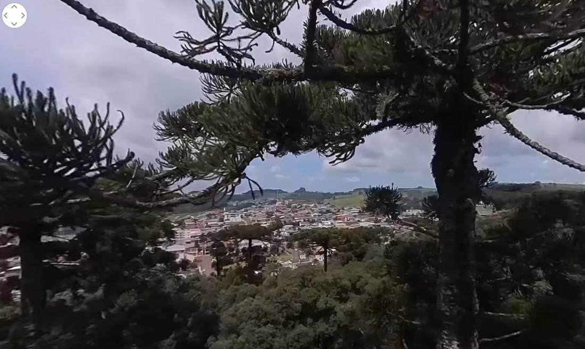
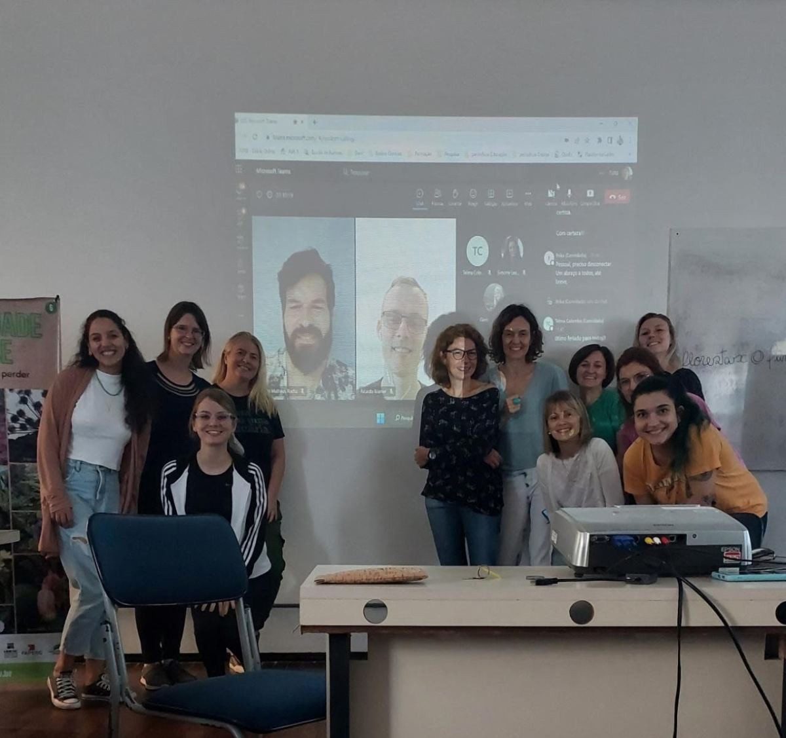
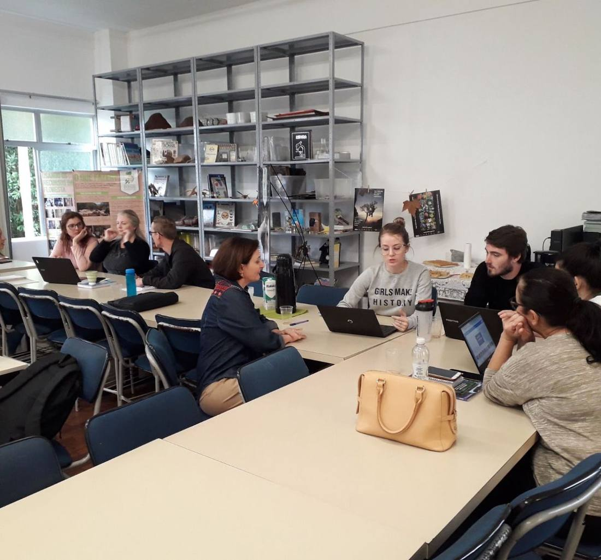
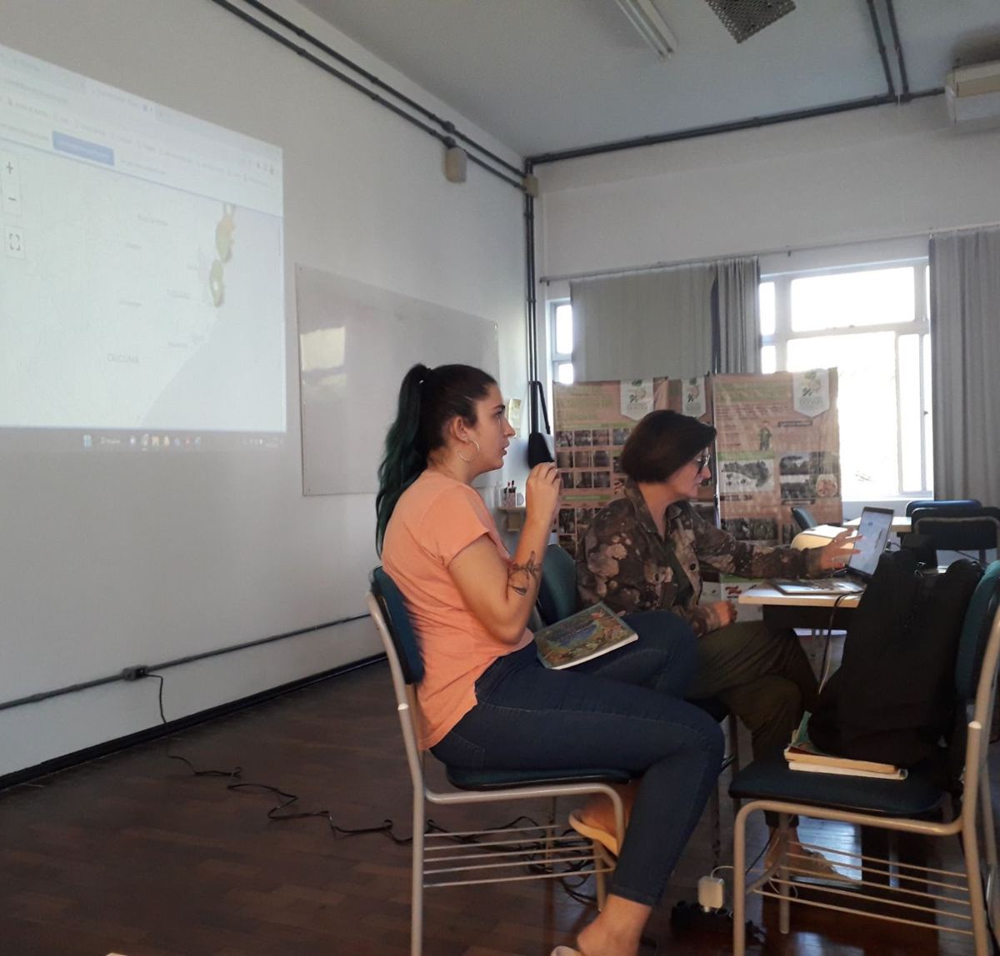

Educação Florestal
Instituição Responsável:
Universidade Regional de Blumenau (FURB)
Coordenadoras:
Profa. Dra. Daniela Tomio
Profa. Dra. Simone Leal Schwertl
Objetivo:
Promover ações de divulgação científica e de educação ambiental, especialmente para o público escolar
As ações de Educação Florestal do FlorestaSC consistem em promover atividades de divulgação científica, especialmente direcionadas ao público escolar, a partir do conhecimento científico elaborado nos estudos do FlorestaSC.
A equipe busca desenvolver materiais educativos e promover percursos formativos com professores e estudantes a fim de despertar a curiosidade, sensibilizar ao conhecimento socioambiental e mobilizar às ações sustentáveis sobre e nas nossas florestas catarinenses, via escola e universidade.
Uma das propostas é produzir a Biblioteca da Floresta, que será composta por um conjunto de livretos sobre temáticas das florestas catarinenses, elaborados em coautoria com professores/as da Rede Estadual de Santa Catarina.
Conheça nossas iniciativas de Educação Florestal


Acesse AQUI nossas publicações e informativos
FIQUE POR DENTRO
Biblioteca da Floresta
A Coleção da Biblioteca da Floresta Catarinense consiste em um material educativo, elaborado em coautoria com professores/as da Rede Estadual de Santa Catarina, que aborde temáticas das florestas catarinenses, articuladas às discussões vigentes do Currículo Base do Território Catarinense.
O material educativo é composto por um conjunto de cinco (5) livretos que visa promover percursos formativos com professores e estudantes a fim de despertar a curiosidade, sensibilizar ao conhecimento socioambiental e mobilizar às ações sustentáveis sobre e nas nossas florestas catarinenses, via escola e universidade.
Cada livreto aborda uma temática sobre as florestas catarinenses. Conheça as cinco temáticas dos livretos, na imagem ao lado:
ACESSE E FAÇA O DOWNLOAD DA COLEÇÃO DA BIBLIOTECA DA FLORESTA CATARINENSE

Em abril de 2023, iniciamos os encontros do nosso coletivo para planejar e desenvolver colaborativamente os livretos que irão compor a Biblioteca da Floresta Catarinense. Os encontros estão sendo realizados mensalmente e ocorrem simultaneamente nos modos presencial e online. Além da equipe de professores e pesquisadores do FlorestaSC, os encontros têm contado com a presença de professores da Educação Básica que atuam em Blumenau e região.

Apresentação da proposta de elaboração da Biblioteca e explanação sobre o FlorestaSC.

Tempo de estudo sobre “comunicação pública da ciência” e reunião dos grupos para discutir o conteúdo produzido pelo FlorestaSC sobre cada temática dos livretos.

Compartilhamento de diferentes formas de comunicação pública da ciência e estabelecimento de diretrizes para a elaboração dos livretos.

Integrantes do coletivo divididos em grupos para trabalhar na elaboração de cada livreto.
Em breve, mais informações sobre a composição da Biblioteca da Floresta.
Acompanhe o andamento de nossas atividades através dos nossos INFORMATIVOS

Aplicativos de realidade virtual
Aplicativos de realidade virtual foram desenvolvidos para disseminar conhecimentos sobre as florestas catarinenses, especialmente no contexto escolar.
Entre 2024 e 2026, numa parceria entre o FlorestaSC e o LDDT - Laboratório de Desenvolvimento e Transferência de Tecnologia da FURB, foi executado o subprojeto FlorestaSC: divulgação científica sobre florestas utilizando tecnologias digitais baseadas em realidade virtual, aumentada e alternativa. O subprojeto foi coordenado pelo Prof. Dr. Maurício Capobianco Lopes e financiado pela FAPESC.
Com o intuito de disserminar conhecimentos sobre as florestas catarinenses de forma interativa, em ambiente escolar, foram desenvolvidos três (3) aplicativos de realidade virtual:
- FlorestaSC RA: um aplicativo de realidade aumentada que permite interações com folhetos explicativos sobre a floresta [Saiba mais; Download]
- FlorestaSC RVi: um aplicativo de realidade imersiva que promove a imersão no parque Floresta Rene Frey (Fraiburgo/SC) [Saiba mais; Download]
- FlorestaSC na Trilha: Um aplicativo de realidade alternativa para ser utilizado durante a visitação ao Parque São Francisco de Assis (Blumenau/SC), permitindo o aprofundamento de conhecimentos sobre o parque. [Saiba mais; Download]
Assista ao vídeo e conheça os aplicativos:
FlorestaSC RA: aplicativo de realidade aumentada
O FlorestaSC RA é um aplicativo de perguntas e respostas que utiliza realidade aumentada. Ele torna o processo de aprendizagem sobre as florestas e espécies catarinenses mais dinâmico e divertido.
Com o FlorestaSC RA, você pode interagir com cinco (5) espécies de árvore das nossas florestas e conhecer mais sobre suas características. São elas: imbuia, xaxim-bugio, araucária, palmiteiro e embaúba.
Baixe o aplicativo FlorestaSC RA na Google Play:

Imprima ou aponte a câmera de seu celular para as fotos das espécies (marcadores) para utilizar junto com o aplicativo.


FlorestaSC RVi: aplicativo de realidade imersiva
O FlorestaSC RVi é um aplicativo que possibilita uma experiência de Realidade Virtual (RV) inédita, na Floresta René Frey. O app abre as portas de um dos santuários ecológicos mais importantes de Fraiburgo, combinando turismo, história e rigor científico.
Esqueça o mundo lá fora e transporte-se para dentro de uma das raras florestas nativas em área urbana do Brasil. Aqui, a preservação não é apenas um conceito — é uma experiência viva.


Baixe o aplicativo FlorestaSC RVi na Google Play:
FlorestaSC na Trilha: aplicativo de realidade alternativa
O FlorestaSC na Trilha é um aplicativo educativo que integra natureza e tecnologia para fortalecer a Educação Florestal e a Divulgação Científica em contextos não formais. Desenvolvido para o Parque Natural Municipal São Francisco de Assis, localizado em Blumenau (SC), utiliza recursos de realidade alternativa para mediar a experiência nas trilhas, promovendo aprendizagens em três dimensões: conhecer na, sobre e para a floresta.
No conhecer na floresta, valoriza a imersão, a observação atenta e a investigação em contato direto com o ambiente.
Baixe o aplicativo FlorestaSC na Trilha na Google Play:


Exposição itinerante
Nossas Florestas: exposição itinerante
Estamos realizando uma exposição que percorre escolas, universidades, shoppings e eventos em todo o Estado, e que resumidamente apresenta o FlorestaSC - Inventário Florístico Florestal de Santa Catarina e seus feitos.
Qualquer proprietário ou administrador de um espaço com circulação de pessoas pode receber a exposição ‘Nossas Florestas’, sempre de forma gratuita!
Informações e agendamentos pelo e-mail florestasc@furb.br ou pelo telefone (47) 3221-6100
Em todos esses anos de pesquisa, o FlorestaSC esteve voltados para o público científico; publicando livros, artigos e etc., mas agora estamos também com os olhos voltados para o público em geral, pessoas interessadas em conhecer o que foi descoberto até agora sobre as florestas catarinenses. Para isso, idealizamos uma exposição com todas as descobertas.
A ideia é trazer de uma forma mais simples o que foi encontrado até agora para informar o público sobre temas e terminologias que envolvem a natureza.
Detalhes sobre o material:
Possui 3 mesas expositivas com materiais utilizados em campo, livros publicados, sementes, madeira e plantas. Além do material gráfico constituído por 13 painéis informativos e outros com fotos do acervo do FlorestaSC;
Espaço necessário: pelo menos 60 m², coberto e que não bata muito vento.


Os Temas abordados são:
Descubra como é feito um inventário florestal
Antes mesmo do FlorestaSC/IFFSC entrar na história, dois grandes pesquisadores já estudaram as florestas e plantas do Estado de Santa Catarina, entre 1950 e 1970. O projeto FlorestaSC/IFFSC começou em 2007 com os levantamentos da flora. Como foi feito isso é o que vamos apresentar.
Quanto ainda temos de floresta e outras descobertas
O inventário de florestas inclui o levantamento quantitativo e qualitativo. Aqui mostraremos o quanto de floresta ainda temos no Estado e em que condições elas se apresentam (quais as principais espécies e as principais preocupações).
Tipos de florestas em Santa Catarina
A Mata Atlântica é o bioma em que o Estado de Santa Catarina está inserido, dentro dele ainda são encontrados diferentes tipos de florestas (fitofisionomias). Suas diferenças são causadas por variações do clima, dos solos, do relevo e da localização geográfica, que serão melhor explicadas aqui.
Tipos de plantas
As florestas tropicais e subtropicais, como a nossa, são as que apresentam os mais variados tipos de plantas. Em cinco anos de levantamento das florestas pelo FlorestaSC foi encontrada uma riqueza elevada de espécies. Apresentaremos aqui as características de cada grupo de planta e o número de espécies que encontramos em cada um.
Epífitos
Os epífitos são plantas típicas de florestas tropicais e subtropicais, que utilizam as árvores como suporte (mas sem prejudicá-las). Existe muita gente por ai apaixonada por esse grupo de plantas, que apresenta uma beleza própria e um jeito todo diferente de sobreviver.
Pteridófitas
Pteridófitas, também chamados de cavalinhas, xaxins, avencas ou samambaias, são plantas bastante conhecidas, pois muitas são utilizadas na decoração de varandas e jardins das casas. Muitas delas não possuem o formato característico das samambaias de casa, sendo que é na floresta que encontramos uma grande variedade de tipos. Vamos mostrar um pouco mais sobre o assunto aqui.
Herbário: uma grande coleção de plantas
O paraíso dos botânicos é o herbário, é onde são guardadas amostras das plantas coletadas em campo. O herbário tem regras próprias; nós vamos mostrar como funciona o Herbário FURB, local onde todas as plantas coletadas pelo FlorestaSC estão armazenadas.
Sucessão florestal
Você sabia que as florestas degradadas podem se recuperar? Mas este não é um processo rápido, podendo levar séculos. Por isso é importante conservar as florestas. Aqui mostraremos como funciona esse processo de sucessão nas florestas.
A parceria entre plantas e animais
A parceria entre plantas e animais é, muitas vezes, tão específica que a falta de um dos lados pode acarretar na extinção do outro. As plantas fornecem abrigo e alimento aos animais, e os animais participam da reprodução, dispersão das sementes e proteção das plantas; uma parceria de muitos milhões de anos de evolução.
Diversidade genética
A genética está presente em todo ser vivo, é ela a base para a evolução de qualquer espécie ao longo do tempo. Para as plantas não é diferente, a perda de diversidade genética é prejudicial para o futuro das espécies. Saiba o que foi constatado pelo FlorestaSC sobre a genéticas das espécies ameaçadas de extinção em Santa Catarina.
Usando os recursos da floresta
Um grupo da EPAGRI, Empresa de Pesquisa Agropecuária e Extensão Rural de Santa Catarina; em parceria com o FlorestaSC/IFFSC, visitou as casas de agricultores por todo o Estado, averiguando quais espécies eram mais utilizadas para uso madeireiro, medicinal, alimentício e ornamental. Aqui são expostas as espécies mais citadas pelos agricultores e, quem sabe, com potencial de uso futuro.
Impactos na floresta
Que existem muitas atividades impactantes nas florestas catarinenses, era de se imaginar; mas você sabe quais são as mais comuns? O FlorestaSC/IFFSC fez esse levantamento e ele está resumido aqui.
O que fazer ?
Apesar de termos perdido uma parte significativa de nossas florestas, ainda temos uma grande riqueza natural, basta saber como lidar com isso. Aqui vão sugestões de ações que poderiam ser realizadas pelo Estado e por nós. Faça sua reflexão sobre o assunto.
Instituições e eventos que expusemos
Epagri / Florianópolis
Centro Administrativo do Governo do Estado / Florianópolis
Shopping Continente / Florianópolis
Instituto Federal de Santa Catarina - IFSC / Garopaba
Universidade Barriga Verde - Unibave / Orleans
Siderópolis Clube (Prefeitura de Siderópolis) / Siderópolis
Museus de Zoologia da Universidade do Extremo Sul Catarinense - UNESC / Criciúma
Shopping Norte / Blumenau
Shopping Neumarkt / Blumenau
Dudalina Camisaria / Blumenau
Dudalina Camisaria / Benedito Novo
Dudalina Camisaria / Presidente Getúlio
Dudalina Camisaria / Luís Alves
Dudalina Camisaria / Terra Boa - PR
Mausoléu Dr. Blumenau / Blumenau
AGROTEC / Itajaí
Feira das Orquídeas / Blumenau
Universidade Estácio de Sá / São José
Instituto Federal de Santa Catarina - IFSC - Gaspar
Museu do Instituto Federal Catarinense / Santa Rosa do Sul
Universidade Comunitária da Região de Chapecó - Unochapecó / Chapecó
EEB Bom Pastor / Chapecó
Universidade do Oeste de Santa Catarina / Unoesc campus Xanxerê
Universidade Federal da Fronteira Sul / Campus Chapecó
Shopping Pátio Chapecó / Chapecó
EEB Professora Lourdes Ângela Sarturi Lago / Chapecó
Universidade do Oeste de Santa Catarina / Unoesc campus Chapecó
Colégio Exponencial / Chapecó
EEB Cardeal Arcoverde / São Carlos
Universidade do Estado de Santa Catarina - UDESC / Lages
Secretaria de Desenvolvimento Regional / São Joaquim
Universidade Federal de Santa Catarina - UFSC Curitibanos / Curitibanos
Universidade Federal de Santa Maria - UFSM / Frederico Westphalen - RS
Universidade Federal de Santa Maria - UFSM / Santa Maria - RS
Biblioteca da Floresta Catarinense
Consulte aqui:
BIBLIOTECA DA FLORESTA CATARINENSE
A Biblioteca da Floresta Catarinense é um material educativo composto por cinco (5) livretos que abordam diferentes temáticas sobre as florestas catarinenses. Este material visa promover percursos formativos com professores e estudantes a fim de despertar a curiosidade, sensibilizar ao conhecimento socioambiental e mobilizar às ações sustentáveis sobre e nas nossas florestas catarinenses, via escola e universidade.

➤ Faça seu cadastro para o download da coleção Biblioteca da Floresta Catarinense.
A coleção Biblioteca da Floresta Catarinense é composta pelos seguintes livretos:
- Volume 1: Cobertura Florestal
- Volume 2: Riquezas da Floresta
- Volume 3: Usos de Produtos e Serviços da Floresta
- Volume 4: Impactos Antrópicos na Floresta
- Volume 5: Estoques da Floresta
Ouça o Podcast sobre a Biblioteca da Floresta Catarinense:
Informativos "Florestando na Escola"
Para que o público possa acompanhar as atividades realizadas e as etapas futuras do coletivo da Educação Florestal, o FlorestaSC está disponibilizando um informativo, semestralmente.
Informativo Florestando na Escola
Cartilhas e Folhetos

Trabalhos apresentados em eventos sobre Educação em Ciências
Os trabalhos do coletivo de educação florestal são divulgados em eventos científicos, através da submissão de resumos e apresentações orais. Consulte abaixo os resumos dos trabalhos apresentados.
TISE 2025 - Conferência Internacional sobre Informática na Educação - Recife/PE: 02 a 04 de dezembro de 2025
- REALIDADE VIRTUAL NA EDUCAÇÃO FLORESTAL: TRÊS APLICATIVOS EDUCACIONAIS PARA DIVULGAÇÃO CIENTÍFICA SOBRE AS FLORESTAS CATARINENSES RESUMO
CBIE 2025 - Congresso Brasileiro de Informática na Educação - Curitiba/PR: 24 a 28 de novembro de 2025
- ENTRE ÁRVORES E TELAS: UM APLICATIVO DE REALIDADE AUMENTADA PARA EDUCAÇÃO FLORESTAL RESUMO
VI SECEC - Simpósio Catarinense em Educação em Ciências (2025) - Florianópolis/SC: 06 a 08 de novembro de 2025
- DIVULGAÇÃO CIENTÍFICA PARA EDUCAÇÃO FLORESTAL COM TECNOLOGIAS DE REALIDADE VIRTUAL RESUMO
EREBio Sul 2025 - Encontro Regional Sul de Ensino de Biologia - Curitiba/PR: 12 a 14 de outubro de 2025
- EDUCAÇÃO FLORESTAL COM USO DE REALIDADE AUMENTADA: AVALIANDO UM APLICATIVO PARA ENSINAR E APRENDER SOBRE AS FLORESTAS DE SANTA CATARINA RESUMO
MIPE 2025 - Mostra Integrada de Ensino, Pesquisa, Extensão e Cultura - Blumenau/SC: 16 a 18 de setembro de 2025
- BIBLIOTECA DA FLORESTA CATARINENSE: DIVULGAÇÃO CIENTÍFICA EM INTERFACE À FORMAÇÃO DOCENTE RESUMO
- DESENVOLVIMENTO DE MATERIAL EM REALIDADE AUMENTADA PARA A DIVULGAÇÃO CIENTÍFICA DAS FLORESTAS RESUMO
IV SECIM - Seminário de Ensino das Ciências da Natureza e da Matemática (2025) - Blumenau/SC: 21 a 23 de agosto de 2025
- DIVULGAÇÃO CIENTÍFICA PARA EDUCAÇÃO FLORESTAL VIA “BIBLIOTECA DA FLORESTA CATARINENSE”: REFLEXÕES SOBRE SUA ARQUITETURA TEXTUAL RESUMO
- REALIDADE AUMENTADA NO ENSINO DE CIÊNCIAS: O CASO DO APLICATIVO “FLORESTASC RA” PARA EDUCAÇÃO FLORESTAL RESUMO
V SECEC - Simpósio Catarinense em Educação em Ciências (2024) - Araquari/SC: 14 a 16 de novembro de 2024
- BIBLIOTECA DA FLORESTA CATARINENSE: DIVULGANDO CIÊNCIA NA ESCOLA PARA EDUCAÇÃO FLORESTAL RESUMO
IV SECEC - Simpósio Catarinense em Educação em Ciências (2023) - Rio do Sul/SC: 09 a 11 de novembro de 2024
Download da biblioteca
Página migrada de floresta.sc.gov.br.